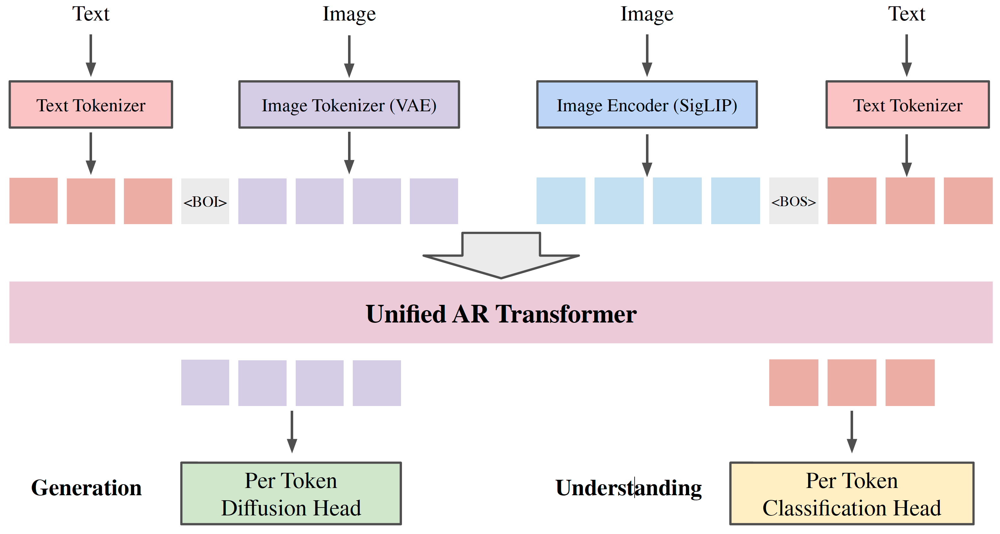
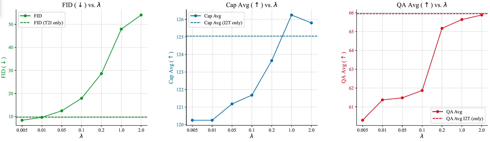

An autoregressive framework for joint visual generation and understanding, applying diffusion loss on continuous visual tokens (VAE latents) & cross-entropy loss on discrete text tokens.
[2] An Empirical Study of GPT-4o Image Generation Capabilities (arXiv 2025)
Date: 2025-04-08
Project: GPT-4o Visual Generation Study
Authors: Sixiang Chen, Jinbin Bai, Zhuoran Zhao, Tian Ye, Qingyu Shi, Donghao Zhou, Wenhao Chai, Xin Lin, Jianzong Wu, Chao Tang, Shilin Xu, Tao Zhang, Haobo Yuan, Yikang Zhou, Wei Chow, Linfeng Li, Xiangtai Li, Lei Zhu, Lu Qi
Organizations: The Hong Kong University of Science and Technology (GZ), National University of Singapore, Peking University, The Chinese University of Hong Kong, University of Washington, Wuhan University
Summary: Empirical study of GPT-4o's image generation capability on text-to-image, image-to-image, image-to-3D, and image-to-X.
Exceptional text rendering capability: correct spelling, alignment, formatting even in document-style.
Compositional generation and prompt following: accrately assembling complex scene elements, styles, or attributes.
Geometric consistency and viewpoint realism: 3D view synthesis, camera control, depth-conditioned rendering.
Comprehensive image transformation capability: from low-level to high-level tasks.
[1] Unified Autoregressive Visual Generation and Understanding with Continuous Tokens (arXiv 2025)
Date: 2025-03-17
Project: UniFluid
Authors: Lijie Fan, Luming Tang, Siyang Qin, Tianhong Li, Xuan Yang, Siyuan Qiao, Andreas Steiner, Chen Sun, Yuanzhen Li, Tao Zhu, Michael Rubinstein, Michalis Raptis, Deqing Sun, Radu Soricut
Organizations: Google DeepMind, MIT
Summary: An autoregressive framework for joint visual generation and understanding, applying diffusion loss on continuous visual tokens (VAE latents) & cross-entropy loss on discrete text tokens.

Framework: it performs joint training of image generation and understanding through next-token prediction.
Tokenizer: use VAE image tokenizer for generation, SigLIP image encoder for understanding, SentencePiece tokenizer for text.
Prediction head: use modality-specific prediction heads to calculate losses and sampling for each modality.
Token split: "Beginning of Image (BOI)" token to indicate continuous image tokens.
Loss: loss1: image understanding loss on text answer; loss 2: image generation loss on image tokens.
Training details: batchsize=2048, optimizer=AdamW, lr=1e-4, steps=1M, init_ckpt=Gemma-2.

There is trade-off between generation & understanding.